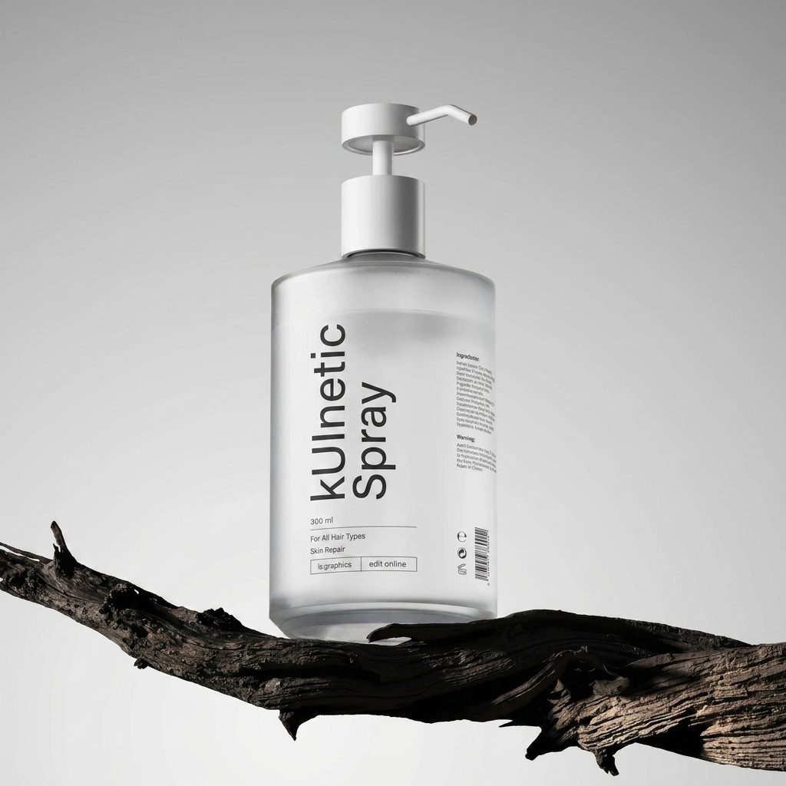
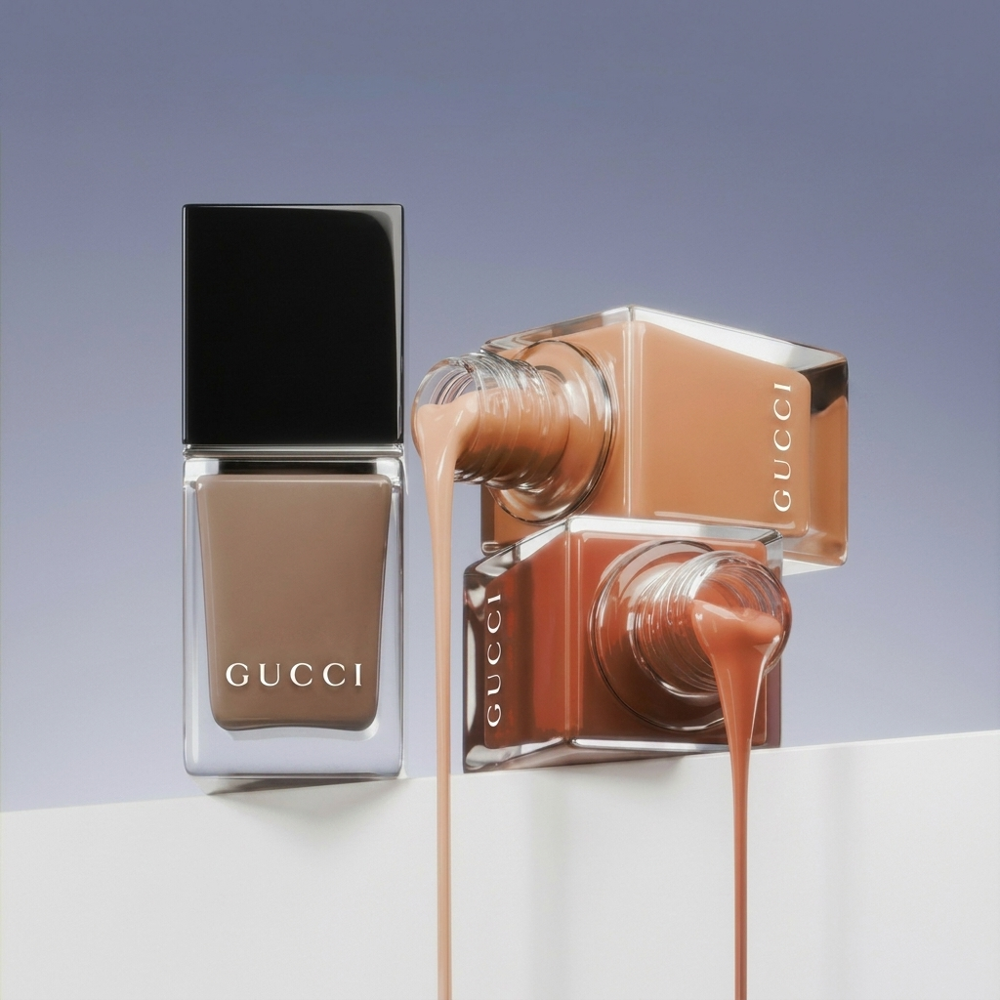
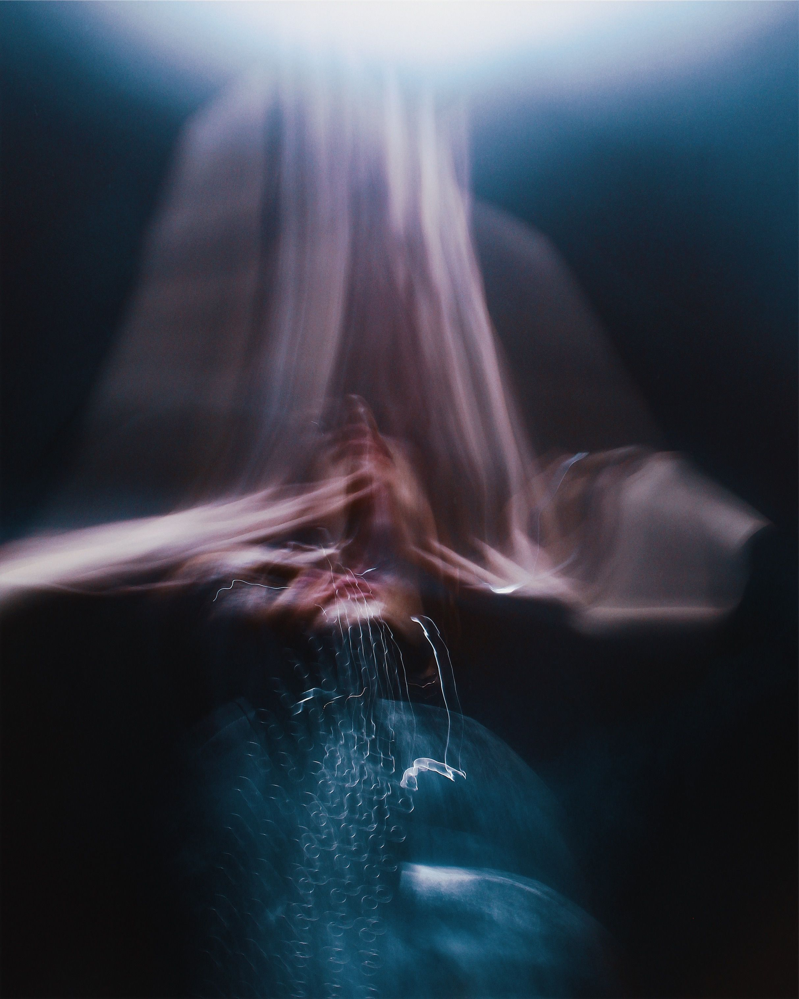

CSS Animations · Reveals
Everything here is one HTML attribute.
No JavaScript on this page configures anything. Each element carries a
data-kui value, and the library compiles it into a single CSS
@keyframes rule — entrance, composition, parameters, and trigger, all in one string.
Scroll slowly — every card below reveals on its own enter timeline.

The entrance matrix
All 32 entrance names the library ships, grouped the same way the
catalog groups them. The matching 16 exit names
(fade-out, slide-out-left, and friends) aren't shown here —
an exit effect's resting state is invisible, so there's nothing honest to demo with a
scroll-triggered card.
Fade — 5



Slide — 4


Logical (RTL-aware) — 4
Zoom — 4

Flip — 2
Rotate — 5
Blur — 1
Combo presets — 2
Character easing — 5

Composition
Two or three effects in one attribute. They compile into a single declaration with parallel value lists, and are only allowed when the CSS channels they own are disjoint.
Parameters
Any parameter the primitive declares can be tuned inline, and is validated before it ever reaches CSS.
Triggers
Effects don't have to fire on enter — hover, click, and load are first-class triggers too.